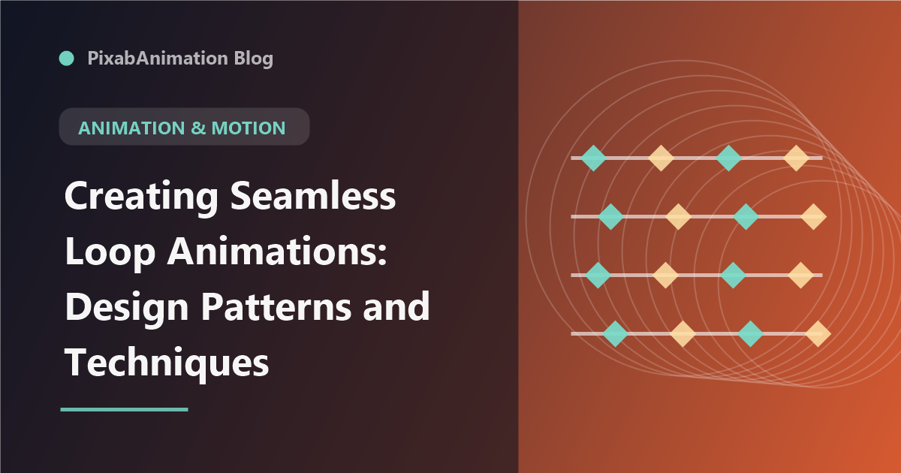

Creating Seamless Loop Animations: Design Patterns and Techniques

Seamless loop animations — motion sequences that repeat without visible beginning or end — are essential for background videos, loading screens, social media content, and digital displays. A well-crafted loop creates an infinite, hypnotic visual experience that viewers can watch indefinitely without noticing the loop point. This guide explores professional techniques for creating seamless loop animations that appear to run forever.
The Mathematics of Looping
The foundation of any seamless loop is understanding that the animation's end state must match its beginning state. Every property — position, rotation, scale, opacity, color — must return to its starting value at the loop point. The simplest way to achieve this is to ensure the animation duration divides evenly into the desired loop time. For complex multi-element animations, using the loopOut("cycle") expression in After Effects automatically repeats keyframes seamlessly.
Looping Techniques by Type
Linear Loops
Linear loops move elements in a consistent direction, using the edges of the frame as invisible portals. Elements exit one side and re-enter from the opposite side, creating infinite directional motion. This technique works well for particle systems, scrolling backgrounds, and data streams.
Cyclic Loops
Cyclic loops return to their exact starting state at the loop point. Rotation loops (360-degree spins), pulsing loops (scale oscillations), and floating loops (gentle bobbing) are common examples. The key to natural cyclic loops is using easing curves that create smooth acceleration and deceleration rather than linear motion.
Randomized Loops
Using seedRandom() and wiggle() with consistent seeds creates loop-like randomization that repeats predictably. This technique is valuable for creating organic textures, sparkle effects, and ambient motion that feels natural while technically being reproducible.
Advanced Loop Techniques
Multi-layered loops combine multiple looping elements at different speeds and phases, creating visual complexity while maintaining seamless transitions. Offset timing — starting different elements at different points in their loop — creates organic, non-repetitive feel within a structured looping framework. Audio-reactive loops tie animation parameters to music or sound effects, creating synchronized looped experiences.
Optimizing Loops for Different Platforms
Loop animations serve different purposes across platforms. For websites and apps, keep loops subtle and short (3-10 seconds) with small file sizes. For social media, create visually striking loops that work without sound and grab attention in the first second. For digital displays and events, loops should be longer (30-60 seconds) with more variation to prevent visual fatigue. Always test loops on the target platform to ensure seamless playback.
"A perfect loop is invisible — viewers should never notice where it begins or ends. The best loops create a sense of perpetual motion that feels natural and intentional." — Motion Design Handbook, 2026